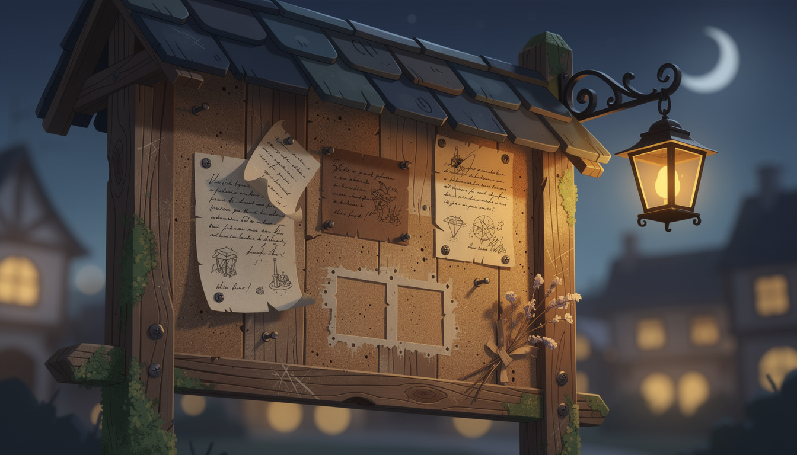
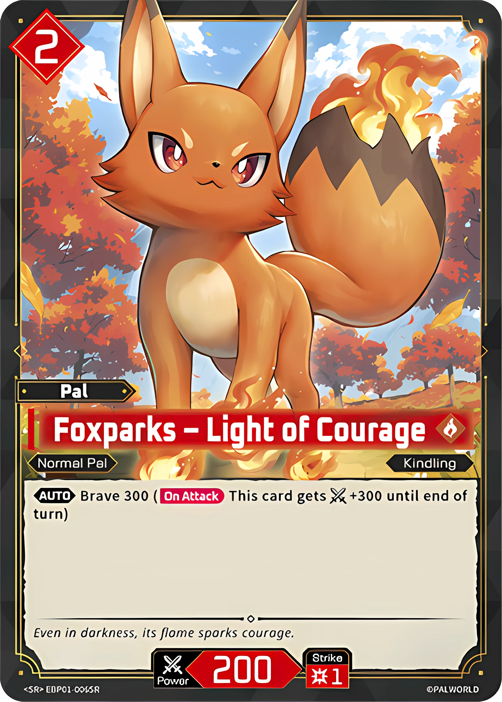

{this.src='waystone-art/board-b.png?r='+this.dataset.r},900*this.dataset.r)}">Paper speaks to the road; the cards live indoors. A sketch of what’s sought, word of market-day — and the way to the fire.

SOUGHT — the courage printing.